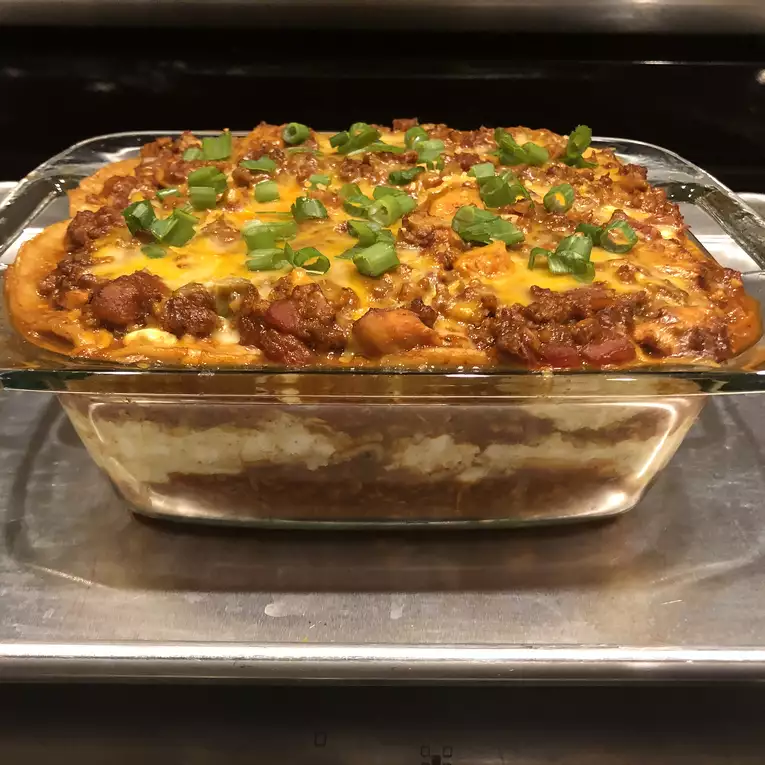

Cheesy lasagna

How to make a delicious lasagna
In this page we will learn how to make a delicious lasagna like the one above. Crispy on top and full of delicious mozzarella cheese
We will provide the recipe
to make sure you have anything you need.
Then we will start with the steps in order to make sure you are on the right track
Ingredients
- 1 (16 ounce) package lasagna noodles
- 1 pound lean ground beef
- 1 (16 ounce) jar spaghetti sauce
- salt and pepper to taste
- 1 clove garlic, minced
- ½ pound shredded mozzarella cheese
- ½ pound shredded Cheddar cheese
- 1 pint ricotta cheese
Steps
- Bring a large pot of lightly salted water to a boil. Add pasta and cook for 8 to 10 minutes or until al dente; drain.
- Preheat oven to 350 degrees F (175 degrees C). In a large skillet over medium-high heat, brown beef and season with salt and pepper; drain. Stir in spaghetti sauce and garlic and simmer 5 minutes.
- In a medium bowl, combine mozzarella, Cheddar and ricotta; stir well. In 9x13 inch pan, alternate layers of noodles, meat mixture and cheese mixture until pan is filled.
- Bake in preheated oven for 30 minutes, or until cheese is melted and bubbly.
- And voala, enjoy!